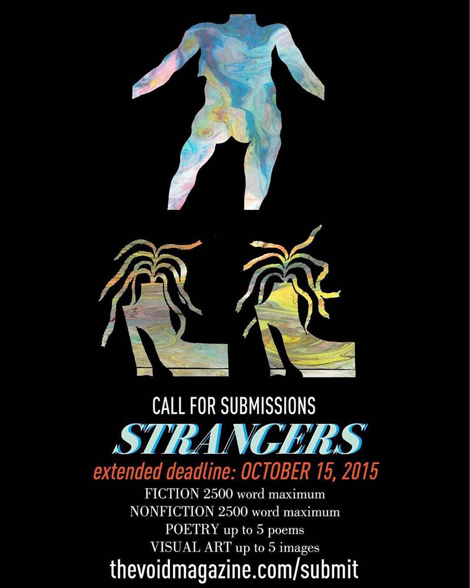

-
Case StudyThe Art Gallery of Ontario
Filed under , , .
The Art Gallery of Ontario (AGO) is one of the longest standing art institutions in Canada. With a revitalized vision towards reframing what constitutes Canadian art, affecting new acquisitions, exhibitions and programming, a visual rebranding is opportune. Myself and my designer co-conspirator Elora Crawford present a new vision for a new decade: a modular, playful, and scalable design system for the AGO.
-
Case StudyThe Void Magazine

Filed under , , , .
The Void Magazine is Concordia University's only bilingual arts and literary journal, operating independent of any department since 2002. During my 2 year tenure as the magazine's Art Director, I identified a disunified brand, and refocused its visual identity to balance an interest in playful interdisciplinarity with intellectual rigour.
The Little Mag that Could
Images from our launch for issue 15.2. The Void Magazine is Concordia University’s only bilingual arts and literary journal. Uniquely untethered to any department within the school, its ethos derives from being independently organized and produced. The team comprises students from Studio Art and English departments, as a means of cross-pollinating their cohorts’ creative imaginations. The result is an extraordinary little bi-annual publication, organized by theme and launched once a semester with a night of readings and performances.
An Indie Operation Vying to Sustain
Issues and promotional material from before I came on as the Art Director. As a student-run organization, the magazine's editorial staff was frequently turned over.
A largely inconsistent visual identity for the magazine was forged as a result. While it made for a charming DIY aesthetic—useful to the extent that it gave the magazine a cult following—it narrowed the reach of the publication and ultimately stifled diversity of thought. Further, an amateur quality to the design system overall made it challenging to retain a reputation of excellency, despite the quality of content.
As the independent publication gets passed down to editorial staff over generations of students, managing financials is burdensome and confusing. When I was the Art Director, we faced constant risk of discontinuation, which energized our team to devise sustainable solutions.
The Void Community: Writerly Cool Kids and Avant G-Artists
Both graduate and undergraduate students in the Fine Arts faculty and the English department engaged the magazine as submitters, while its readership represented these departments and more. Folks interested in expanded notions of image and word were drawn to it—more liberal in terms of formal requirements than other journals on campus.
My Role, Our Scope, and the Work's Constraints
The Fine Arts Reading Room at Concordia displaying an array of past issues for a night of readings we organized. As Art Director, I worked in an editorial team composed of two Editors-in-Chief, Editors of Poetry, Fiction and Non-Fiction respectively, a Social Coordinator, and a French Content Editor. I was responsible for curating all visual submissions to the magazine, performing layout design and creating promotional materials including the design of merchandise for fundraising.
Varied academic and part-time work schedules created time-management tensions, as most decision-making processes were settled collectively. Being independent from any faculty or department meant we had to source solutions to perpetually depleting funds for production.
Forming Playful and Practical Solutions Through Precise Visual Identity Frameworks
I produced a robust design system where it didn’t otherwise exist, defining typefaces and copy depending on the visual context.

A call for submissions poster for our Dig issue and its subsequent launch poster. I focused any promotional material imagery on the interplay between word and image, which is what the Void is most known for. This was embodied by the principles of ASCII art, or text-as-visual, which was a unique visual tenet amongst a competitive landscape of publications at the school.


Here's a sampling of the final three covers and two letters from the editors pages, that articulates design consistency. A consistent design rhetoric for magazine layout was implemented and enforced over four consecutive issues.

The original logo type transitioning into our now iconic logo mark that featured on sold out totes. A logo mark was made where the logotype fell flat visually.
This mark enlivened The Void’s brand, and was placed on limited edition totes to cultivate a larger following.
The Void Expands
All this to the effect of our submissions doubling from the first issue I was onboard. We also cultivated more submissions from graduate level artists and writers.
The design schema produced a revenue stream in the form of new merchandise possibilities, allowing the publication to exist stillmore. Beyond the quanitfiable benefits, it better defined the community that surrounded The Void Magazine as it more specifically defined itself.
-
Case StudyThe Store Patch

Filed under , .
The store Patch is a vintage eCommerce outfitter committed to ethical lifestyle consumption. For their founders, my design partner and I identified their UX pain points and executed mockups
-
Case StudyAustin Doughs
Filed under ,, , .
This portfolio item is in-progress and will be updated in real time!